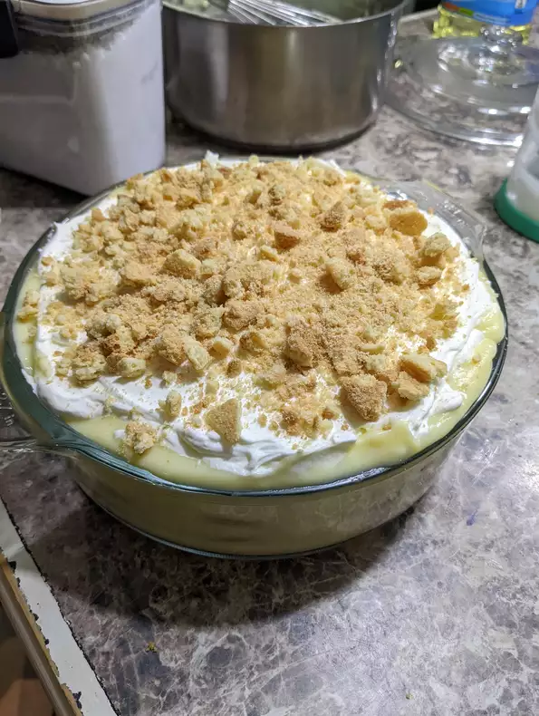

Homemade Banana Pudding

Description
Banana pudding is the epitome of comfort food when it comes to desserts. This southern classic
is easy to make from scratch using mostly pantry staples. With the perfect pudding-to-cookie
ratio, this delightfully sweet and creamy banana pudding tastes real in comparison to boxed pudding
mixes. It might just be the best I've ever made!
Ingredients
- 3 cups whole milk
- 1 cup white sugar
- 1/3 cup all-purpose flour
- 1/4 tsp kosher salt
- 4 large egg yolks
- 1 tbsp unsalted butter
- 1 1/2 tsp vanilla extract
- 1 box vanilla wafers
- 4 large bananas, sliced
- 1 cup heavy whipping cream
- 1/4 cup powdered sugar
Steps:
- Whisk milk, sugar, flour, and salt together in a medium saucepan until well combined.
Place over medium-low heat and cook, whisking frequently, until the mixture comes to
a low simmer and begins to thicken, 5 to 10 minutes.
- Beat egg yolks in a small bowl until smooth. Add about 3/4 cup of the hot milk mixture
and stir it quickly into the egg yolks. Whisk the egg yolk mixture back into the hot milk
mixture and continue to cook, stirring constantly, until thick and creamy, about 5 minutes.
Turn off heat, add butter and vanilla, and stir until smooth. Let cool slightly, about 10
minutes.
- Set aside 6 vanilla wafers for the top. Arrange a layer of vanilla wafers in the bottom of
a deep, 8-inch square or 2-quart baking dish. Top with a single layer of sliced bananas.
Add another single layer of vanilla wafers, then spread 1/2 of the pudding mixture over top.
Top with another layer of sliced bananas and the remaining vanilla wafers. Spread the remaining
pudding over top, letting it seep into any open spaces. Cover lightly with plastic wrap and
refrigerate 4 hours to overnight.
- When ready to serve, beat heavy cream with an electric mixer until soft peaks form, incorporating
powdered sugar about halfway through.
- Remove banana pudding from the refrigerator. Spread whipped cream over top. Crush reserved
vanilla wafers and sprinkle over the whipped cream. Serve immediately.